Managementul proiectelor, stilurile de conducere, comunicarea și gestionarea conflictelor
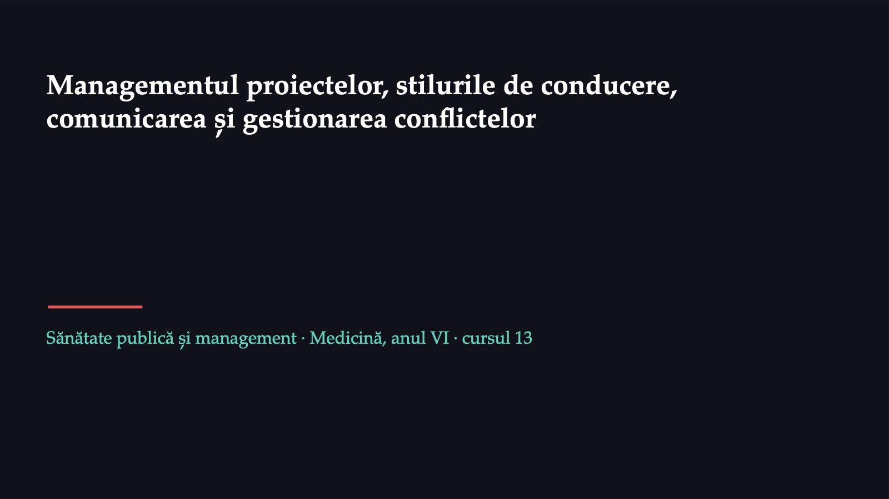
1 / 48Bună ziua. Cursul de azi are două jumătăți: cum se planifică un proiect și cum sunt conduși oamenii care îl duc la capăt. Le leagă o situație trăită de titularul cursului: un proiect pe care echipa clinică nu-l voia. Nu începem cu teoria, ci cu această situație.
Tema din fișa disciplinei
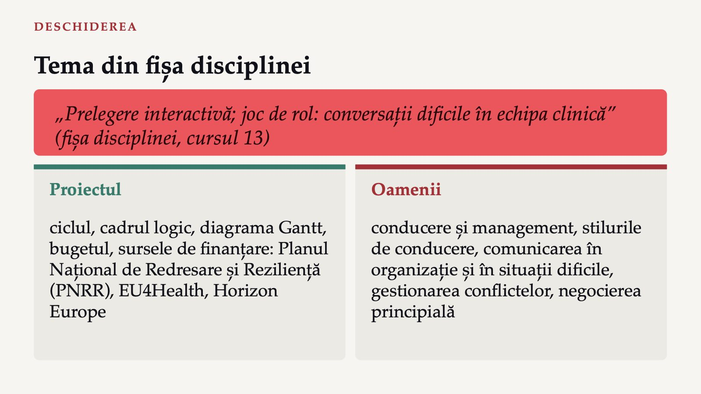
2 / 48Fișa disciplinei dă acestui curs o metodă precisă: prelegere interactivă și jocul de rol al unei conversații dificile în echipa clinică. Conținutul are două părți. Prima este despre proiect: ciclul lui, cadrul logic, diagrama Gantt, bugetul și sursele de finanțare, adică Planul Național de Redresare și Reziliență, programul EU4Health și programul Horizon Europe. A doua este despre oameni: diferența dintre conducere și management, stilurile de conducere, comunicarea, conversațiile dificile, conflictele și negocierea. Conversația dificilă pe care o lucrați azi nu este scrisă dinainte pe o fișă de rol; vine dintr-o situație reală.
1
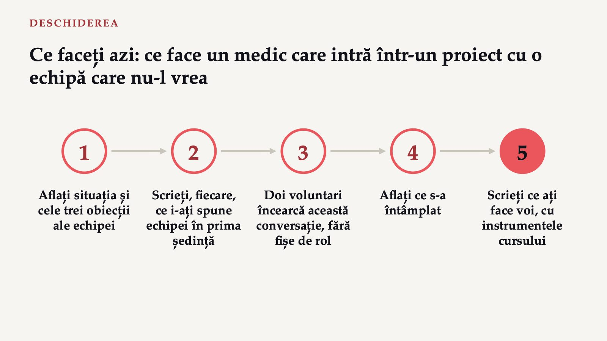
3 / 48Azi faceți ce face un medic care intră într-un proiect cu o echipă care nu-l vrea. Aflați întâi situația și cele trei obiecții ale echipei. Apoi fiecare scrie, pe foaie, ce i-ar spune echipei în prima ședință a proiectului. Doi voluntari încearcă apoi conversația, în fața tuturor, fără fișe de rol. După aceea aflați ce s-a întâmplat. La sfârșit, scrieți ce ați face voi, cu instrumentele cursului. Telefonul vă trebuie numai pentru întrebări de opinie, fără variantă bună sau rea.
Titularul cursului a avut de dus la capăt, împreună cu o echipă clinică, un proiect finanțat din fonduri externe, cu termene și raportări
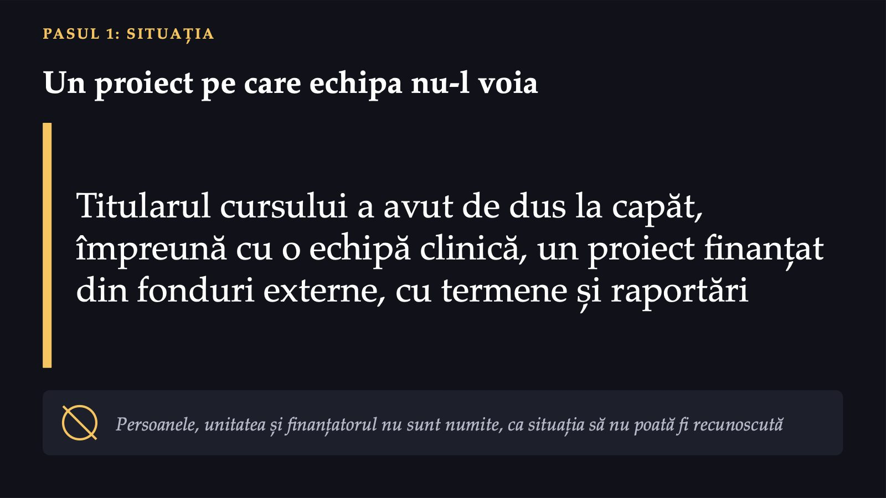
4 / 48Situația este reală. Titularul cursului a avut de dus la capăt, împreună cu o echipă clinică, un proiect finanțat din fonduri externe, cu termene și raportări. Persoanele, unitatea și finanțatorul nu sunt numite, ca situația să nu poată fi recunoscută; din același motiv nu veți afla nici anul, nici sumele. Era o echipă clinică: oamenii care trebuiau să facă proiectul erau aceiași care tratau pacienții.
Echipa nu voia proiectul, din trei motive
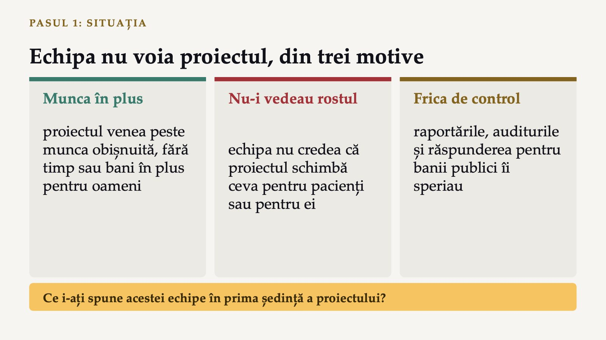
5 / 48Echipa nu voia proiectul și avea trei motive. Primul era munca în plus: proiectul venea peste munca obișnuită, fără timp sau bani în plus pentru oameni. Al doilea: nu-i vedeau rostul; echipa nu credea că proiectul schimbă ceva pentru pacienți sau pentru ei. Al treilea era frica de control: raportările, auditurile și răspunderea pentru banii publici îi speriau. Întrebarea la care lucrați azi este simplă și grea: ce i-ați spune acestei echipe în prima ședință a proiectului?
A
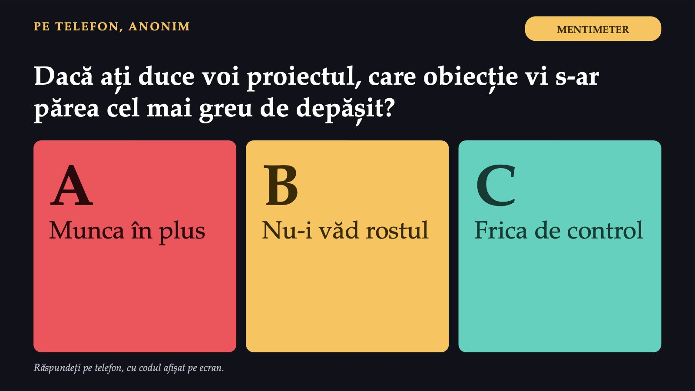
6 / 48Luați telefonul. Întrebarea este despre voi și nu are o variantă bună sau una rea: dacă voi ați duce proiectul, care dintre cele trei obiecții vi s-ar părea cel mai greu de depășit? Nimeni nu vede cine ce a ales.
Fiecare obiecție privește un instrument al cursului
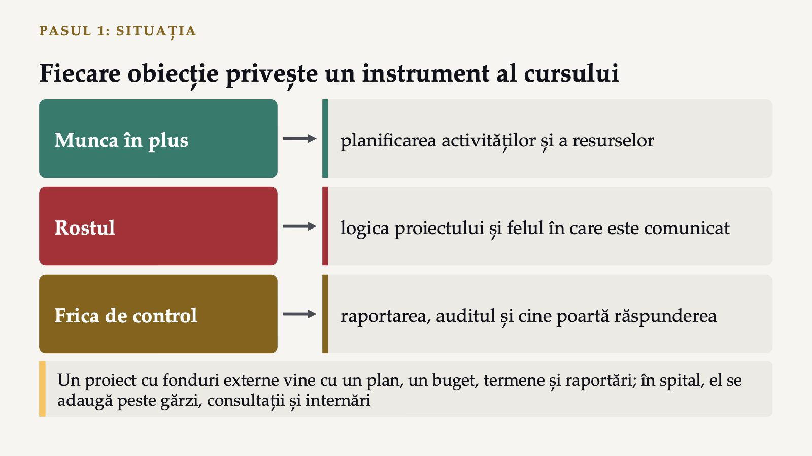
7 / 48Ați văzut ce obiecție vi se pare cea mai grea. Fiecare dintre cele trei privește câte un instrument al cursului. Munca în plus ține de planificarea activităților și a resurselor. Rostul ține de logica proiectului și de felul în care este comunicat. Frica de control ține de raportare, de audit și de cine poartă răspunderea. Un proiect cu fonduri externe vine cu un plan, un buget, termene și raportări; într-o unitate sanitară, el se adaugă peste gărzi, consultații și internări, iar echipa care îl duce este aceeași care tratează pacienții. Prima jumătate a cursului vă dă instrumentele planului.
Ce este un proiect
![PARTEA ÎNTÂI: PROIECTUL ȘI PLANUL LUI Ce este un proiect Regula de lucru a cursului: dacă se lărgește conținutul, cresc timpul sau costul; dacă se scurtează timpul, crește costul sau scade conținutul Institutul de Management al Proiectelor (Project Management Institute, PMI) un efort temporar, întreprins pentru a crea un produs, un serviciu sau un rezultat unic Are un început și un sfârșit distincte și, cel puțin, un calendar, un buget, un conținut și resurse Temporar se încheie la o dată stabilită dinainte, iar echipa lui se desface Unic produce ceva ce nu exista în acea formă](diapozitive/C13/008.jpg) 8 / 48
8 / 48Institutul de Management al Proiectelor definește proiectul ca pe un efort temporar, întreprins pentru a crea un produs, un serviciu sau un rezultat unic, cu un început și un sfârșit distincte și cu cel puțin un calendar, un buget, un conținut și resurse. Pentru medic contează două cuvinte. Temporar: proiectul se încheie la o dată stabilită dinainte, iar echipa lui se desface atunci. Unic: produce ceva ce nu exista în acea formă, o secție dotată, un registru, un circuit nou al pacienților, un program de formare. Calendarul, bugetul și conținutul sunt folosite în acest curs ca trei constrângeri ale planului, legate printr-o regulă de lucru, nu printr-o normă citată din ghidul PMI: dacă se lărgește conținutul, cresc timpul sau costul; dacă se scurtează timpul, crește costul sau scade conținutul. Resursele includ oamenii, iar într-o unitate sanitară oamenii proiectului pot fi aceiași care tratează pacienții.
Proiectul și rutina secției
 9 / 48
9 / 48Activitatea de rutină a unei secții are trăsăturile opuse proiectului. Internările, gărzile, consultațiile și externările se repetă zilnic, fără dată de încheiere, după proceduri cunoscute, cu personalul de pe posturile lui. Un spital face ambele lucruri în același timp: funcționează zilnic și derulează proiecte. Greutatea apare acolo unde aceiași oameni fac ambele munci. Munca de proiect are termenele finanțatorului, iar munca de rutină are pacienții din fața lor. Dacă planul proiectului nu spune cine face fiecare activitate și cu ce timp, proiectul se sprijină în tăcere pe orele suplimentare ale echipei. Aceasta este prima obiecție din situația de la început.
1
![PARTEA ÎNTÂI: PROIECTUL ȘI PLANUL LUI Ciclul unui proiect: cinci faze (fișa disciplinei) 1 Identificarea problema reală, cine este afectat, ce cauze are; arborele problemelor și analiza părților interesate 2 Formularea obiectivele, activitățile, bugetul, calendarul; instrumentul fazei este cadrul logic 3 Implementarea activitățile planificate, cu achizițiile și contractele lor 4 Monitorizarea însoțește implementarea pe toată durata ei 5 Evaluarea obiectivele atinse, costurile, ce rămâne după finanțare; lecțiile ei alimentează următorul proiect](diapozitive/C13/010.jpg) 10 / 48
10 / 48Fișa disciplinei enumeră cinci faze ale ciclului proiectului. În identificare se pornește de la o problemă reală: cine este afectat, ce cauze are, cine are interes în rezolvarea ei. Se folosesc arborele problemelor, cu cauzele sub problemă și efectele deasupra ei, și analiza părților interesate, adică a persoanelor, grupurilor și instituțiilor care pot ajuta proiectul sau pot fi afectate de el. În formulare se stabilesc obiectivele, activitățile, bugetul și calendarul, cu ajutorul cadrului logic. În implementare se fac activitățile planificate, cu achizițiile și contractele lor. Monitorizarea este a patra în lista fișei, dar nu vine după implementare: o însoțește pe toată durata ei. Evaluarea judecă la final dacă proiectul și-a atins obiectivele, cu ce costuri și dacă ce a construit rămâne după încheierea finanțării. Lecțiile ei alimentează identificarea următorului proiect; de aceea se vorbește despre un ciclu.
Cadrul logic: ierarhia obiectivelor, citită de jos în sus
![PARTEA ÎNTÂI: PROIECTUL ȘI PLANUL LUI Cadrul logic: ierarhia obiectivelor, citită de jos în sus Activitățile ce face echipa, cu ce resurse Rezultatele imediate de exemplu, un centru dotat, oameni instruiți Scopul beneficiul direct pentru grupul căruia i se adresează proiectul, la sfârșitul lui Obiectivul general o schimbare pe termen lung în starea de sănătate, la care proiectul contribuie, alături de alți factori Regula de lucru a cursului: managerul de proiect răspunde pentru scop, nu pentru obiectivul general Formularele, raportările și termenele stau pe treapta de jos; rostul proiectului se vede pe treptele de sus: a doua obiecție](diapozitive/C13/011.jpg) 11 / 48
11 / 48Cadrul logic este metoda prin care un proiect se construiește de la analiza problemei până la matricea care îl rezumă: analiza problemei, a părților interesate, a obiectivelor și a strategiilor. Obiectivul principal se descompune în obiective mai mici, ușor de gestionat, așezate într-un arbore al obiectivelor. Ierarhia obiectivelor are patru niveluri și se citește de jos în sus, ca un lanț „dacă…, atunci…”. Activitățile produc rezultatele imediate; dacă rezultatele există, se atinge scopul, beneficiul direct pentru grupul căruia i se adresează proiectul; dacă scopul este atins, proiectul contribuie la obiectivul general, o schimbare pe termen lung în starea de sănătate. Proiectul nu atinge singur obiectivul general, de aceea regula de lucru a acestui curs este că managerul de proiect răspunde pentru scop. Ierarhia privește și a doua obiecție a echipei. Formularele, raportările și termenele stau pe treapta de jos; scopul și obiectivul general, pe treptele de sus. Cel care conduce proiectul alege la ce treaptă se oprește discuția cu echipa.
Matricea cadrului logic
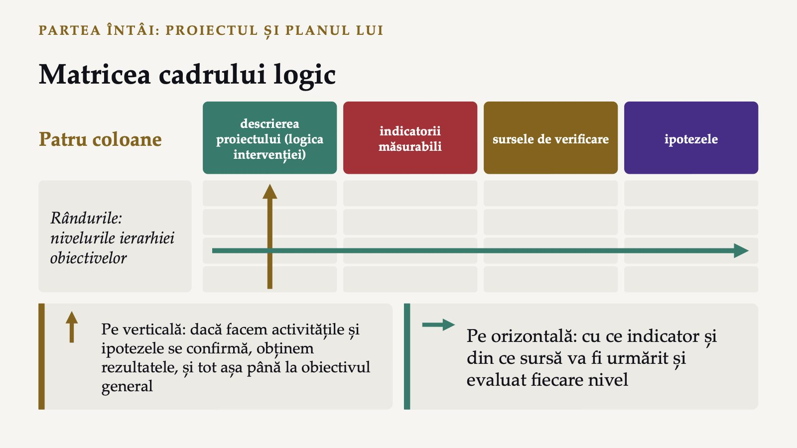
12 / 48Matricea cadrului logic rezumă proiectul într-un tabel. Are patru coloane: descrierea proiectului, adică logica intervenției, indicatorii măsurabili, sursele de verificare, de unde se ia dovada, și ipotezele. Rândurile sunt nivelurile ierarhiei obiectivelor. Matricea se citește în două feluri. Pe verticală, prima și ultima coloană arată lanțul: dacă facem activitățile și ipotezele se confirmă, obținem rezultatele, și tot așa până la obiectivul general. Pe orizontală, coloanele din mijloc arată cum va fi urmărit și evaluat fiecare nivel: cu ce indicator și din ce sursă.
Valori ipotetice. Exemplu construit, fără cifre: matricea unui proiect de screening al cancerului colorectal
![PARTEA ÎNTÂI: PROIECTUL ȘI PLANUL LUI Valori ipotetice. Exemplu construit, fără cifre: matricea unui proiect de screening al cancerului colorectal Obiectivul general: scăderea mortalității prin cancer colorectal în județ · indicatorul: mortalitatea specifică · sursa: statisticile oficiale ale mortalității Scopul creșterea acoperirii cu screening a populației eligibile ponderea populației eligibile testate registrul programului ipoteza: populația acceptă invitația Rezultatele imediate centre funcționale, personal instruit numărul centrelor deschise și al persoanelor instruite rapoartele proiectului, listele de prezență personalul instruit rămâne în post Activitățile achiziția aparaturii, instruirea, campania de informare bugetul executat, sesiunile ținute facturi, contracte, registrele campaniei finanțarea sosește la timp](diapozitive/C13/013.jpg) 13 / 48
13 / 48Iată un exemplu construit de matrice, fără cifre, ca model de completare, pentru un proiect de screening al cancerului colorectal. Obiectivul general este scăderea mortalității prin cancer colorectal în județ, măsurată prin mortalitatea specifică, din statisticile oficiale. Scopul este creșterea acoperirii cu screening a populației eligibile, măsurată prin ponderea celor testați, din registrul programului, cu ipoteza că populația acceptă invitația. Rezultatele imediate sunt centrele funcționale și personalul instruit, cu ipoteza că personalul instruit rămâne în post. Activitățile sunt achiziția aparaturii, instruirea și campania de informare, cu ipoteza că finanțarea sosește la timp. Ultima coloană conține condiții pe care echipa nu le controlează.
Trei greșeli frecvente la completarea matricei
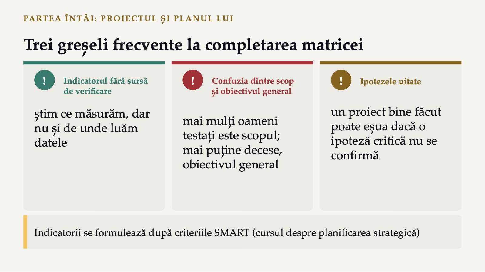
14 / 48Trei greșeli apar des în exercițiile acestui curs. Prima este indicatorul fără sursă de verificare: un indicator pe care nu-l poate proba nimeni nu folosește nici la monitorizare, nici la evaluare. A doua este confuzia dintre scop și obiectivul general: mai mulți oameni testați este scopul, mai puține decese este obiectivul general. A treia sunt ipotezele uitate, condițiile externe de care proiectul are nevoie și pe care echipa nu le controlează, ca finanțarea care sosește la timp sau personalul care rămâne în post. Un proiect bine făcut poate eșua dacă o ipoteză critică nu se confirmă. Indicatorii din matrice se formulează după criteriile SMART, pe care le-ați lucrat la cursul despre planificarea strategică.
Calendarul: diagrama Gantt
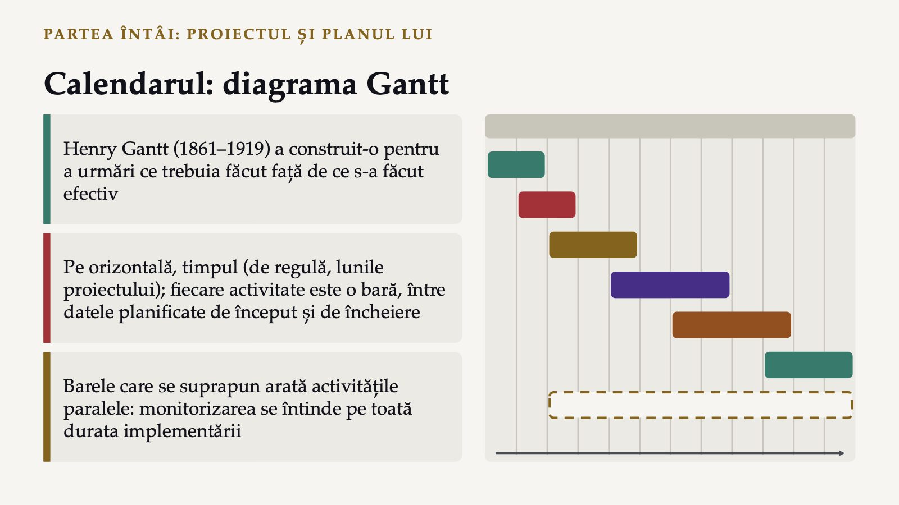
15 / 48Cadrul logic spune ce vrea proiectul; calendarul spune când se face fiecare lucru. Diagrama Gantt poartă numele lui Henry Gantt, care a construit-o pentru a urmări ce trebuia făcut față de ce s-a făcut efectiv. Pe axa orizontală stă timpul, de regulă lunile proiectului, iar fiecare activitate este o bară care începe și se termină la datele planificate. Barele care se suprapun arată activitățile paralele; monitorizarea, de exemplu, se întinde pe toată durata implementării. Ați văzut modelul logic și calendarul activităților la cursul despre planificarea strategică; aici sunt aplicate unui proiect cu termen fix.
Drumul critic
![PARTEA ÎNTÂI: PROIECTUL ȘI PLANUL LUI Drumul critic Unele activități depind de altele: personalul nu poate fi instruit pe aparatura care nu a fost achiziționată, iar aparatura nu poate fi achiziționată înainte de semnarea contractului Metoda drumului critic (Critical Path Method) găsește activitățile care stabilesc durata întregului proiect O activitate de pe drumul critic nu are timp de rezervă: dacă întârzie și întârzierea nu este recuperată pe activitățile care urmează pe același drum, se mută data de încheiere a proiectului Activitățile din afara drumului critic pot întârzia, în anumite limite, fără să mute data de încheiere](diapozitive/C13/016.jpg) 16 / 48
16 / 48Unele activități depind de altele. Personalul nu poate fi instruit pe aparatura care nu a fost încă achiziționată, iar aparatura nu poate fi achiziționată înainte de semnarea contractului. Metoda drumului critic găsește activitățile cele mai critice, cele care stabilesc durata întregului proiect, ca resursele importante să fie îndreptate spre ele; alături de diagrama Gantt, este una dintre tehnicile folosite pentru calendarul unui proiect. O activitate de pe drumul critic nu are timp de rezervă: dacă întârzie ea și întârzierea nu este recuperată pe activitățile care urmează pe același drum, se mută data de încheiere a întregului proiect. Activitățile din afara drumului critic pot întârzia, în anumite limite, fără să mute data de încheiere.
Calendarul și oamenii
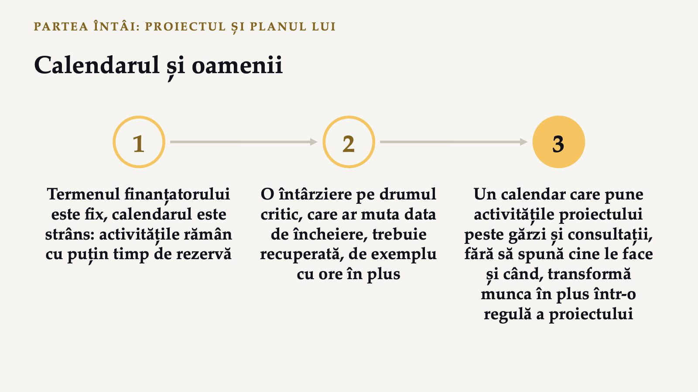
17 / 48Pentru echipa din situația titularului, calendarul are urmări directe asupra oamenilor. Când termenul finanțatorului este fix și calendarul este strâns, activitățile rămân cu puțin timp de rezervă. O întârziere pe drumul critic, care ar muta data de încheiere, trebuie atunci recuperată, de exemplu cu ore în plus. Un calendar care pune activitățile proiectului peste gărzi și consultații, fără să spună cine le face și când, transformă munca în plus într-o regulă a proiectului.
Bugetul, raportarea și cererea de finanțare
![PARTEA ÎNTÂI: PROIECTUL ȘI PLANUL LUI Bugetul, raportarea și cererea de finanțare Cererea de finanțare leagă totul: justificarea nevoii pe date reale, obiective SMART din cadrul logic, calendarul, bugetul eligibil, planul de monitorizare și ce rămâne după finanțare Raportările și auditurile dovedesc că banii publici au fost cheltuiți pentru ce s-a promis: aici stă a treia obiecție, frica de control Bugetul, pe categorii personal aparatură servicii deplasări comunicare audit costuri indirecte Regulile de eligibilitate diferă de la un program la altul; se citesc în ghidul solicitantului al fiecărui apel](diapozitive/C13/018.jpg) 18 / 48
18 / 48Bugetul unui proiect cu fonduri externe se construiește pe categorii de cheltuieli: personal, aparatură, servicii, deplasări, comunicare, audit, costuri indirecte. El respectă regulile de eligibilitate ale programului care îl finanțează; regulile diferă de la un program la altul și se citesc în ghidul solicitantului al fiecărui apel. Aici se află a treia obiecție a echipei, frica de control. Raportările și auditurile au o rațiune precisă: prin ele se dovedește că banii publici au fost cheltuiți pentru ce s-a promis. Cererea de finanțare leagă toate aceste instrumente: justificarea nevoii, cu date reale despre problema de sănătate; obiectivele din cadrul logic, formulate SMART; planul de activități, cu calendarul lui; bugetul; planul de monitorizare, care spune cum vor fi urmăriți indicatorii și ce rămâne după încheierea finanțării. Evaluatorul cererii judecă și coerența dintre aceste părți.
31 august 2026
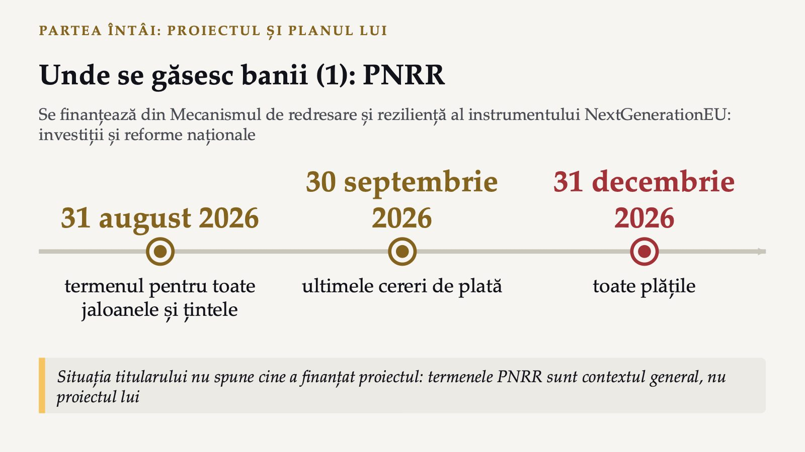
19 / 48Pe lângă sursele obișnuite ale sistemului de sănătate, discutate la cursul despre finanțare, proiectele din spitale se finanțează din trei mari instrumente europene, cu scopuri diferite. PNRR se finanțează din Mecanismul de redresare și reziliență al instrumentului NextGenerationEU și finanțează investiții și reforme naționale. Comunicarea Comisiei din 4 iunie 2025 constata că statelor membre le mai rămăseseră 454 de zile pentru reformele și investițiile din planurile lor. Toate jaloanele și țintele trebuiau finalizate până la 31 august 2026, iar nicio acțiune de după această dată nu mai poate fi luată în considerare la evaluarea cererilor de plată. Ultimele cereri de plată trebuiau prezentate până la 30 septembrie 2026, iar toate plățile trebuie efectuate până la 31 decembrie 2026. Cursul deduce de aici, iar deducția nu aparține Comisiei, că termenul din august a lăsat activităților din unitățile beneficiare puțină rezervă de timp. Situația titularului nu spune cine a finanțat proiectul; termenele acestea nu descriu proiectul lui. Componenta de sănătate a PNRR al României și situația investițiilor ei după revizuirea planului nu au putut fi verificate din sursa oficială pentru acest curs.
Unde se găsesc banii (2): EU4Health și Horizon Europe
![PARTEA ÎNTÂI: PROIECTUL ȘI PLANUL LUI Unde se găsesc banii (2): EU4Health și Horizon Europe PNRR: reformele și investițiile din planul unui stat EU4Health: programul de sănătate al Uniunii Horizon Europe: cercetarea și inovarea EU4Health, programul de sănătate al Uniunii, 2021–2027: buget inițial de 5,3 miliarde de euro, redus la 4,4 miliarde după revizuirea cadrului financiar multianual; Regulamentul (UE) 2021/522 Horizon Europe, cercetare și inovare: 93,5 miliarde de euro pentru 2021–2027; sănătatea, în al doilea pilon, prin grupul tematic Sănătate EU4Health, buget inițial 5,3 EU4Health, după revizuirea 4,4 Horizon Europe, 2021–2027 93,5 miliarde de euro](diapozitive/C13/020.jpg) 20 / 48
20 / 48EU4Health este programul de sănătate al Uniunii Europene pentru perioada 2021–2027. A fost instituit prin Regulamentul (UE) 2021/522, pregătește drumul spre o Uniune Europeană a Sănătății și urmărește patru obiective generale și zece obiective specifice. Bugetul lui inițial, de 5,3 miliarde de euro, a fost redus la 4,4 miliarde de euro după revizuirea cadrului financiar multianual. Horizon Europe este programul Uniunii pentru cercetare și inovare; după revizuirea de la jumătatea perioadei, suma orientativă pentru 2021–2027 este de 93,5 miliarde de euro. Cercetarea în sănătate se finanțează în al doilea pilon, „Provocări globale și competitivitatea industrială europeană”, prin grupul tematic Sănătate. La 16 iulie 2025, Comisia a propus programul pentru 2028–2034, cu un buget propus de 175 de miliarde de euro. Diferența se ține minte simplu: PNRR finanțează reformele și investițiile din planul unui stat, EU4Health este programul de sănătate al Uniunii, iar Horizon Europe finanțează cercetarea și inovarea.
Pasul 2: ce i-ați spune echipei în prima ședință a proiectului
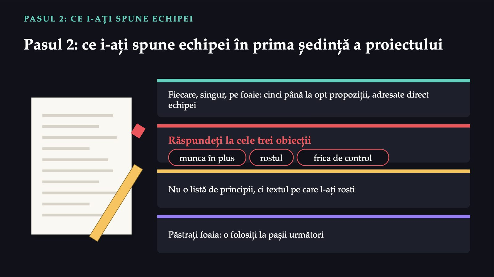
21 / 48Acum este rândul vostru. Fiecare scrie, singur, pe foaie, ce i-ar spune echipei în prima ședință a proiectului: cinci până la opt propoziții, adresate direct echipei, care răspund la cele trei obiecții, munca în plus, rostul și frica de control. Nu scrieți o listă de principii, ci textul pe care l-ați rosti, cu vorbele voastre. Vă pot ajuta ce ați văzut până acum: cine face fiecare activitate și când, la ce treaptă a ierarhiei obiectivelor duceți discuția, cine poartă raportarea. Păstrați foaia; o folosiți și după aceea.
?
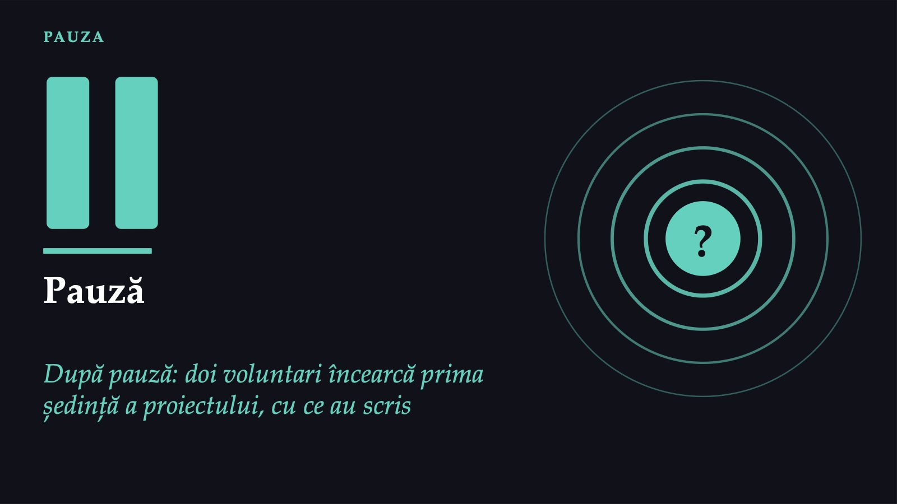
22 / 48Ne oprim aici. Când reluăm, doi dintre voi vor încerca prima ședință a proiectului, în fața tuturor, cu ce au scris. Gândiți-vă dacă vreți să fiți unul dintre ei.
5
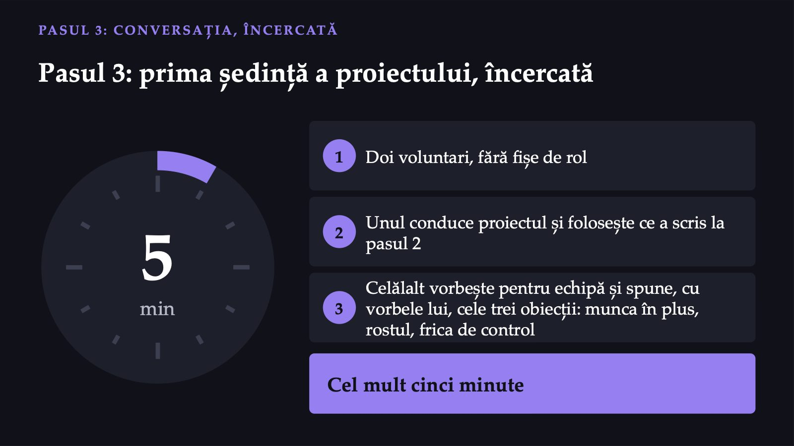
23 / 48Doi voluntari încearcă acum prima ședință a proiectului, fără fișe de rol. Unul conduce proiectul și folosește ce a scris la pasul 2. Celălalt vorbește pentru echipă și spune, cu vorbele lui, cele trei obiecții: munca în plus, rostul, frica de control; nu inventează alte obiecții. Conversația durează cel mult cinci minute. Ceilalți ascultă cu atenție: după conversație, fiecare poate spune ce a auzit.
Ce ați auzit
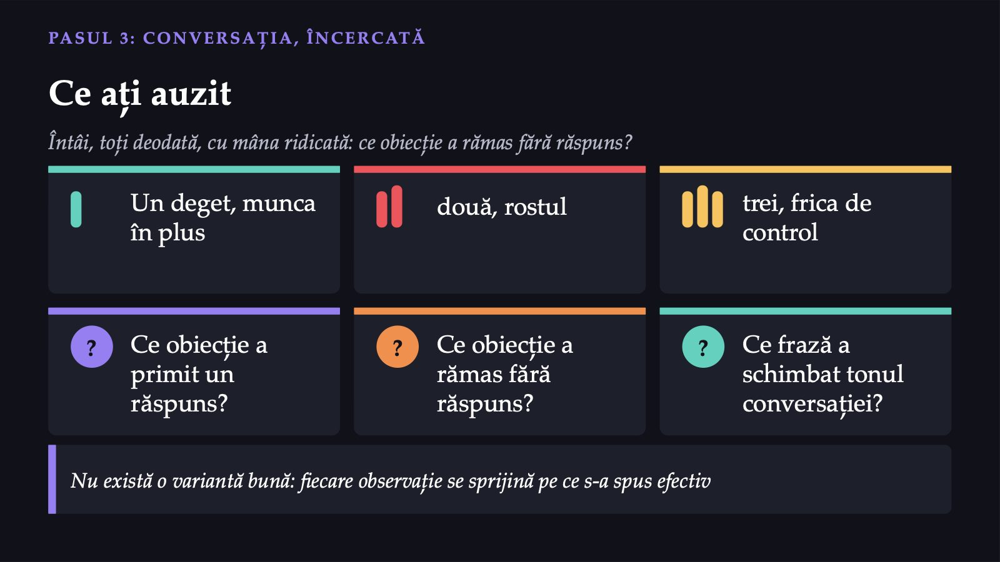
24 / 48Întâi, toți deodată, arătați cu mâna ce obiecție a rămas, pentru voi, fără răspuns; un deget pentru munca în plus, două pentru rost, trei pentru frica de control. Spuneți acum, pe rând, ce ați auzit. Trei întrebări vă ajută. Ce obiecție a primit un răspuns? Ce obiecție a rămas fără răspuns? Ce frază a schimbat tonul conversației? Nu există o variantă bună; fiecare observație se sprijină pe ce s-a spus efectiv, nu pe ce ar fi trebuit spus. Mulțumim celor doi voluntari.
Conducere și management
 25 / 48
25 / 48Ce s-a văzut în conversație trece dincolo de plan. Conducerea și managementul nu sunt același lucru, dar nici nu se exclud. Managementul este un proces format din planificare, organizare, direcționare și control; conducerea este o relație de influență socială între două sau mai multe persoane care depind unele de altele pentru atingerea unui scop. Managerii sunt, de regulă, numiți în funcție, dar cineva poate conduce și fără o funcție formală. Un bun manager are adesea nevoie să conducă, iar conducerea eficace cere, la rândul ei, capacitatea de a stabili obiective, de a planifica, de a decide și de a controla. Warren Bennis, profesor la Universitatea din California de Sud, spunea că multe organizații sunt supradministrate și subconduse. Prima jumătate a cursului, cadrul logic, calendarul și bugetul, a fost management. Situația titularului îi arată limita: un plan bun nu convinge singur o echipă care nu vede rostul proiectului.
Stilurile de conducere
![PARTEA A DOUA: CONDUCEREA ȘI COMUNICAREA Stilurile de conducere Niciun stil nu este bun în orice situație: urgența cere decizia autocratică; o decizie complexă, care cere angajamentul echipei, se ia participativ; libertatea aproape totală merge numai cu experți autonomi Continuumul lui Tannenbaum și Schmidt (anii 1950): de la stilul autoritar la o libertate foarte mare a celor conduși Autocratic centrat pe șef Participativ oamenii sunt consultați și implicați Libertatea deplină („free-rein”) membrii decid singuri, liderul renunță la rolul activ „Laissez-faire” absența conducerii; încrederea echipei în șef și în organizație scade](diapozitive/C13/026.jpg) 26 / 48
26 / 48O clasificare clasică, continuumul propus de Tannenbaum și Schmidt în anii 1950, așază liderul pe o linie continuă, de la stilul autoritar până la o libertate foarte mare a celor conduși. Cercetătorii care au urmat l-au împărțit în trei stiluri: autocratic, centrat pe șef; participativ, în care oamenii sunt consultați și implicați; și stilul în care membrii primesc munca și decid singuri cum o fac, iar liderul renunță la rolul activ de conducere. Acesta din urmă este apropiat de stilul „laissez-faire”, descris ca absența conducerii: liderul evită răspunderea și implicarea, iar încrederea echipei în șef și în organizație scade. Recomandarea acestui curs este că niciun stil nu este bun în orice situație. În urgență, decizia autocratică este cea potrivită: o resuscitare nu se decide prin vot. O decizie complexă, care cere angajamentul echipei, se ia mai bine participativ. Libertatea aproape totală merge numai cu experți autonomi și competenți; cu începători, duce la derivă.
Conducerea tranzacțională și conducerea transformațională
![PARTEA A DOUA: CONDUCEREA ȘI COMUNICAREA Conducerea tranzacțională și conducerea transformațională Studii de corelație: stilul și satisfacția merg împreună; ele nu arată că stilul produce satisfacția O sinteză sistematică, la asistentele medicale: cele mai multe corelații pozitive cu satisfacția în muncă, pentru stilul transformațional; stilurile pasiv-evitante și laissez-faire, corelate negativ Tranzacțională structură și recompensă în schimbul comportamentului dorit; menține funcționarea curentă Transformațională o viziune pe care oamenii o adoptă; duce o echipă printr-o schimbare](diapozitive/C13/027.jpg) 27 / 48
27 / 48O a doua distincție privește ce oferă liderul echipei. Liderul tranzacțional duce echipa spre îndeplinirea sarcinii stabilind structura și oferind o recompensă în schimbul comportamentului dorit; conducerea tranzacțională menține funcționarea curentă, gărzile, raportările, recompensa pentru efort. Liderul transformațional schimbă lucrurile în profunzime, printr-o viziune pe care oamenii o adoptă; conducerea transformațională este cea care duce o echipă printr-o schimbare. O sinteză sistematică a studiilor despre stilurile de conducere și satisfacția în muncă a asistentelor medicale a găsit cele mai multe corelații pozitive pentru stilul transformațional; stilurile pasiv-evitante și laissez-faire au fost corelate negativ cu satisfacția în toate cazurile, iar stilul tranzacțional a avut corelații și pozitive, și negative. Sunt studii de corelație: arată că stilul și satisfacția merg împreună, nu că stilul produce satisfacția. Recomandarea acestui curs este combinarea celor două: tranzacțional pentru funcționarea zilnică, transformațional pentru schimbare.
Conducerea situațională: modelul SLII
![PARTEA A DOUA: CONDUCEREA ȘI COMUNICAREA Conducerea situațională: modelul SLII Fiecărui nivel, stilul cu același număr: D1 → S1, D2 → S2, D3 → S3, D4 → S4 Hersey și Blanchard: liderul își potrivește stilul după capacitatea și disponibilitatea membrilor echipei; cursul predă varianta lui Blanchard, modelul conducerii situaționale II (SLII) Nivelurile de dezvoltare, pentru o sarcină anume D1 competență scăzută, angajament mare D2 competență scăzută spre parțială, angajament scăzut D3 competență medie spre mare, angajament variabil D4 competență mare, angajament mare Stilurile S1 directiv S2 de îndrumare S3 de sprijin S4 de delegare](diapozitive/C13/028.jpg) 28 / 48
28 / 48Modelul conducerii situaționale, propus de Paul Hersey și Kenneth Blanchard și cunoscut și ca teoria ciclului de viață al conducerii, cere liderului să-și potrivească stilul după capacitatea și disponibilitatea membrilor echipei. Cei doi autori au dezvoltat apoi variante separate. Cursul o predă pe cea a lui Blanchard, modelul conducerii situaționale II, prescurtat SLII. El împarte oamenii, pentru o sarcină anume, în patru niveluri de dezvoltare, după competență și angajament: D1, competență scăzută și angajament mare; D2, competență scăzută spre parțială și angajament scăzut; D3, competență medie spre mare și angajament variabil; D4, competență mare și angajament mare. Stilurile sunt directiv, S1, de îndrumare, S2, de sprijin, S3, și de delegare, S4. Fiecărui nivel îi corespunde stilul cu același număr. Modelul inițial al lui Hersey notează nivelurile cu R1 până la R4 și păstrează corespondența pe numere, dar definițiile nivelurilor diferă între cele două variante; de aceea exemplele acestui curs folosesc numai SLII.
Pregătirea se judecă pentru o sarcină, nu pentru persoană
 29 / 48
29 / 48Pregătirea se judecă pentru o sarcină anume, nu pentru persoană în general. Un rezident în prima lună, entuziast, dar fără experiență practică, este în SLII la nivelul D1, competență scăzută și angajament mare, și primește stilul directiv: instrucțiuni clare și supraveghere. A-i delega o procedură complexă îl lasă fără sprijin și pune pacientul în pericol. Un medic primar cu experiență, competent și angajat pentru aceeași sarcină, o poate primi delegată. Același medic primar poate fi însă la un nivel de început pentru o sarcină nouă, de exemplu raportarea către un finanțator extern. Situația titularului nu spune cât de competentă și cât de angajată era echipa pentru sarcina proiectului; modelul cere întâi acest diagnostic, pentru fiecare sarcină, și abia apoi alegerea stilului. O analiză a literaturii despre conducerea situațională în managementul îngrijirilor a constatat că studiile erau puțin transparente și că nu toate își validaseră instrumentele de măsurare.
Comunicarea în organizație
![PARTEA A DOUA: CONDUCEREA ȘI COMUNICAREA Comunicarea în organizație Într-un proiect, obiecțiile care nu ajung la cel care îl conduce circulă pe hol, unde nu le răspunde nimeni De sus în jos decizii și reguli De jos în sus informații, probleme, observații de la cei care fac munca Pe orizontală colegii de același nivel, de exemplu două secții care îngrijesc același pacient Canalele formale (ședințe, rapoarte, proceduri, decizii scrise) și rețeaua informală de relații personale, care nu apare în organigramă În spital, comunicarea de jos în sus este fragilă: asistenta care ezită să contrazică medicul, rezidentul care nu raportează o eroare](diapozitive/C13/030.jpg) 30 / 48
30 / 48Comunicarea într-o organizație circulă în sus, în jos sau pe orizontală, pe canale formale și printr-o rețea informală de relații personale. În spital, comunicarea de jos în sus este fragilă. Într-un proiect, aceeași fragilitate are un efect simplu: obiecțiile echipei nu ajung la cel care conduce proiectul, ci circulă pe canalul informal, pe hol, unde nu le răspunde nimeni.
Barierele comunicării și predarea pacientului
![PARTEA A DOUA: CONDUCEREA ȘI COMUNICAREA Barierele comunicării și predarea pacientului O revizie sistematică: dovezi moderate că SBAR îmbunătățește siguranța pacientului, mai ales la telefon; lipsesc studiile de calitate înaltă Instrumentul SBAR: situația, contextul, evaluarea, recomandarea La predarea pacientului de la o tură la alta, comunicarea nestructurată este un risc pentru siguranță O clasificare de lucru a cursului bariere fizice (zgomotul, întreruperile, distanța) semantice (jargonul, termenii folosiți diferit de specialități diferite) psihologice (emoțiile, oboseala, ierarhia care inhibă reacția celor de jos)](diapozitive/C13/031.jpg) 31 / 48
31 / 48Barierele comunicării sunt fizice, semantice sau psihologice. La predarea pacientului de la o tură la alta, instrumentul SBAR structurează comunicarea; o revizie sistematică a găsit dovezi moderate că folosirea lui îmbunătățește siguranța pacientului, dar și o lipsă de studii de calitate înaltă.
S
![PARTEA A DOUA: CONDUCEREA ȘI COMUNICAREA Conversația dificilă: protocolul SPIKES Baile și colaboratorii, 2000: șase pași pentru comunicarea veștilor proaste S cadrul un loc liniștit și ferit, timp suficient, persoanele potrivite de față, fără întreruperi P percepția ce știe și ce înțelege deja interlocutorul, aflat cu întrebări deschise I invitația cât de multe detalii vrea să primească interlocutorul K informația clar, în limbaj simplu, cu pauze pentru a verifica înțelegerea, după avertizarea că urmează o veste grea E emoțiile spațiu și timp pentru ele; sunt recunoscute S strategia și rezumatul un plan clar, construit împreună, și un rezumat](diapozitive/C13/032.jpg) 32 / 48
32 / 48Protocolul SPIKES a fost propus de Baile și colaboratorii lui în anul 2000, ca o abordare în șase pași a comunicării veștilor proaste, și a rămas articolul cel mai accesat al revistei The Oncologist. Structura lui concisă poate fi învățată de orice profesionist medical. Literele vin din denumirile engleze ale pașilor. Cadrul: conversația are loc într-un loc liniștit și ferit, cu timp suficient, cu persoanele potrivite de față și fără întreruperi. Percepția: medicul află ce știe și ce înțelege deja interlocutorul, cu întrebări deschise. Invitația: medicul află cât de multe detalii vrea interlocutorul să primească. Informația se dă clar, în limbaj simplu, cu pauze pentru a verifica înțelegerea, iar interlocutorul este avertizat că urmează o veste grea. Emoțiile primesc spațiu și timp și sunt recunoscute. Conversația se încheie cu o strategie, un plan clar construit împreună, și cu un rezumat.
SPIKES în prima ședință a unui proiect nedorit
![PARTEA A DOUA: CONDUCEREA ȘI COMUNICAREA SPIKES în prima ședință a unui proiect nedorit Protocolul a fost construit pentru conversația medicului cu pacientul; folosirea lui cu o echipă este o adaptare a acestui curs 1 Cadrul ședința nu se ține pe hol, între două gărzi 2 Percepția înainte de a prezenta proiectul, cel care îl conduce află ce știe și ce crede deja echipa despre el 3 Informația ce cere proiectul de la fiecare, spus clar, fără limbajul formularelor de finanțare 4 Emoțiile obiecțiile sunt ascultate, nu combătute 5 Strategia ședința se încheie cu un plan și cu un rezumat](diapozitive/C13/033.jpg) 33 / 48
33 / 48Protocolul a fost construit pentru conversația medicului cu pacientul. Folosirea lui într-o conversație de conducere, cu o echipă, este o adaptare a acestui curs, nu domeniul pentru care a fost propus. Adaptarea este totuși utilă, pentru că prima ședință a unui proiect nedorit are aceleași capcane ca o veste proastă. Cadrul: ședința nu se ține pe hol, între două gărzi. Percepția: înainte de a prezenta proiectul, cel care îl conduce află ce știe și ce crede deja echipa despre el. Informația: proiectul se spune clar, cu ce cere de la fiecare, fără limbajul formularelor de finanțare. Emoțiile: obiecțiile, munca în plus, rostul, frica de control, sunt ascultate, nu combătute. Strategia: ședința se încheie cu un plan și cu un rezumat, ca ultimul pas al protocolului. Comparați, în gând, cu ce ați scris la pasul 2 și cu ce ați auzit la pasul 3.
Echipa în timp: etapele lui Tuckman
 34 / 48
34 / 48O echipă nu funcționează din prima zi. În 1965, psihologul Bruce Tuckman a descris patru etape ale dezvoltării unei echipe: formarea, confruntarea, normarea și performanța; în engleză, forming, storming, norming și performing. În 1977 a adăugat o a cincea, despărțirea, pentru echipa care se desface la sfârșitul unui proiect. În formare, membrii sunt politicoși, nesiguri și depind de lider. În confruntare apar tensiunile și disputele despre roluri și despre cine decide; ea face parte din dezvoltarea normală a echipei. În normare, echipa își stabilește regulile și crește încrederea. În performanță, echipa lucrează autonom, iar liderul poate delega. Pentru o echipă de proiect, ultima etapă contează cel puțin cât celelalte: proiectul se încheie la o dată fixă, iar echipa lui se desface. Despărțirea pune o întrebare pe care un plan de proiect o poate ocoli: ce rămâne după încheiere, pentru pacienți și pentru oamenii care au lucrat în proiect.
Pasul 4: ce a făcut titularul
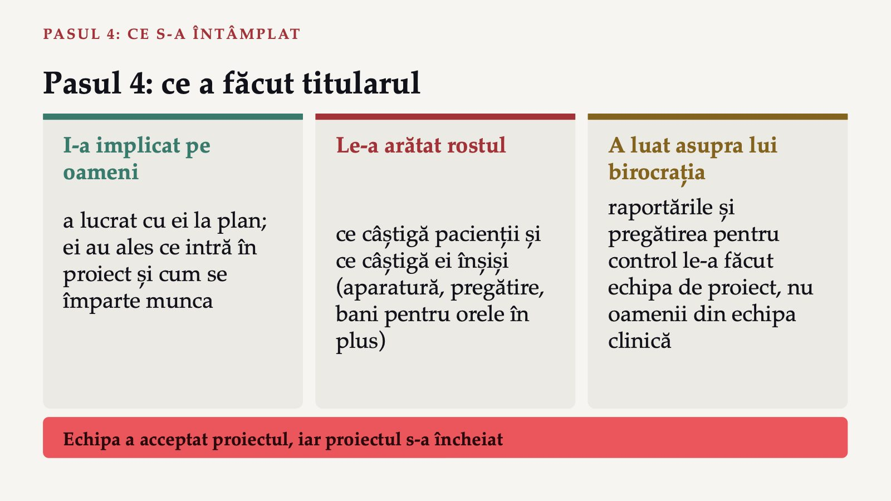
35 / 48Acum aflați ce s-a întâmplat. Titularul cursului a făcut trei lucruri ca echipa să accepte proiectul. I-a implicat pe oameni: a lucrat cu ei la plan, iar ei au ales ce intră în proiect și cum se împarte munca. Le-a arătat rostul: ce câștigă pacienții și ce câștigă ei înșiși, adică aparatură, pregătire și bani pentru orele în plus. A luat asupra lui birocrația: raportările și pregătirea pentru control le-a făcut echipa de proiect, nu oamenii din echipa clinică. Echipa a acceptat proiectul, iar proiectul s-a încheiat. Comparați cu ce ați scris la pasul 2 și cu ce ați auzit la pasul 3: ce măsură v-a lipsit, ce ați avut în plus?
Oboseala
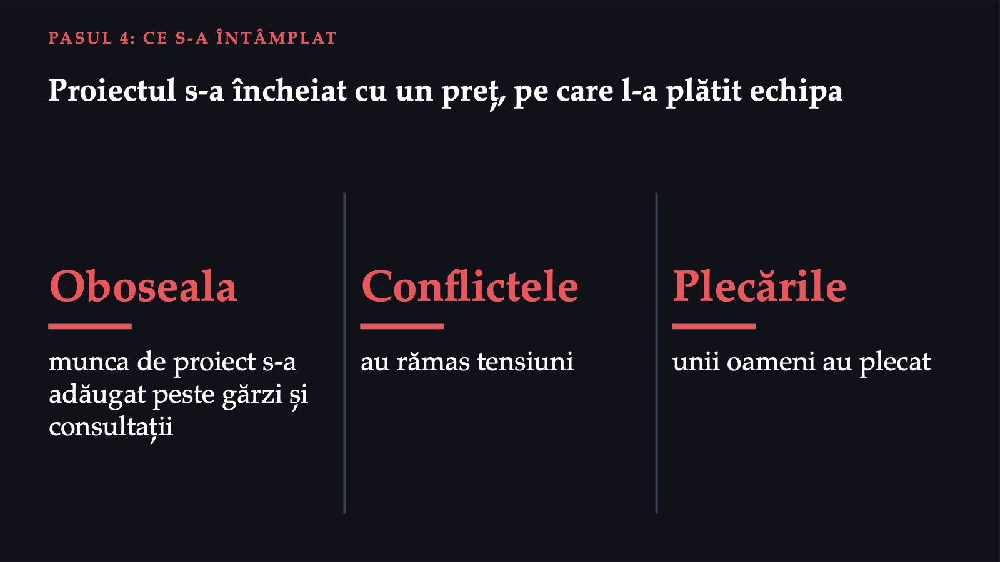
36 / 48Proiectul s-a încheiat însă cu un preț, pe care l-a plătit echipa. Oboseala: munca de proiect s-a adăugat peste gărzi și consultații. Conflictele: au rămas tensiuni. Plecările: unii oameni au plecat. În afara legăturii dintre oboseală și munca adăugată peste gărzi și consultații, situația nu spune de ce a apărut prețul, iar cursul nu adaugă explicații pe care titularul nu le-a dat. Nu se poate spune nici dacă prețul a fost cauzat de măsurile luate sau de alte împrejurări. De ce a apărut și cum ar fi putut fi mai mic este întrebarea la care lucrați la sfârșit.
Ce arată situația, citită cu instrumentele cursului
![PASUL 4: CE S-A ÎNTÂMPLAT Ce arată situația, citită cu instrumentele cursului Implicarea în plan stilul participativ; în SLII, cel mai aproape de stilul de sprijin (S3), potrivit nivelului D3: o ipoteză de discutat, pentru că nu știm cât de competentă era echipa pentru sarcina proiectului Arătarea rostului discuția urcă de pe treapta activităților pe treptele de sus ale ierarhiei obiectivelor; partea transformațională a conducerii Preluarea birocrației răspunde fricii de control: raportarea și pregătirea pentru audit trec de pe oamenii care tratează pacienții pe echipa de proiect](diapozitive/C13/037.jpg) 37 / 48
37 / 48Cele trei măsuri ale titularului răspund, fiecare, unei obiecții. Implicarea în plan este stilul participativ. În SLII, ea seamănă cel mai mult cu stilul de sprijin, S3, pe care modelul îl potrivește nivelului D3, competență medie spre mare și angajament variabil. Situația nu spune însă cât de competentă era echipa pentru sarcina proiectului, de aceea încadrarea rămâne o ipoteză de discutat. Arătarea rostului înseamnă a urca discuția de pe treapta activităților pe treptele de sus ale ierarhiei obiectivelor, acolo unde se vede ce câștigă pacienții; este și partea transformațională a conducerii. Preluarea birocrației răspunde fricii de control, pentru că mută raportarea și pregătirea pentru audit de pe oamenii care tratează pacienții pe echipa de proiect.
Cele cinci moduri de gestionare a unui conflict (modelul Thomas-Kilmann)
![PARTEA A TREIA: CONFLICTUL ȘI NEGOCIEREA Cele cinci moduri de gestionare a unui conflict (modelul Thomas-Kilmann) Două dimensiuni: asertivitatea (cât urmăriți propriile interese) și cooperarea (cât urmăriți interesele celuilalt) asertivitatea cooperarea Competiția (asertiv, necooperant): urgența, o regulă nepopulară, dar necesară Colaborarea (asertiv și cooperant): problemele complexe și importante; cere timp și încredere Compromisul (la mijloc pe ambele dimensiuni): timpul presează, miza este moderată Evitarea (neasertiv, necooperant): conflictele mărunte; o problemă reală se agravează Acomodarea (neasertiv, cooperant): relația contează mai mult decât miza](diapozitive/C13/038.jpg) 38 / 48
38 / 48Într-un conflict, felul în care o parte răspunde depinde de două dimensiuni: cât urmărește să-și satisfacă propriile interese, adică asertivitatea, și cât urmărește să le satisfacă pe ale celuilalt, adică cooperarea. Din combinarea lor rezultă cinci moduri. Modelul este adaptat după lucrările lui K. W. Thomas, iar fișa disciplinei îl numește modelul Thomas-Kilmann. Competiția, asertivă și necooperantă, înseamnă că cineva își impune soluția; este potrivită în urgență sau când trebuie aplicată o regulă nepopulară, dar necesară. Colaborarea, asertivă și cooperantă, caută o soluție care să satisfacă interesele amândurora; cere timp și încredere și este potrivită pentru problemele complexe și importante. Compromisul stă la mijloc pe ambele dimensiuni: fiecare parte cedează ceva, când timpul presează și miza este moderată. Evitarea amână sau ocolește conflictul; este potrivită pentru conflictele mărunte, dar o problemă reală o lasă să se agraveze. Acomodarea înseamnă că o parte cedează celeilalte, când relația contează mai mult decât miza.
Conflictul în echipa clinică
![PARTEA A TREIA: CONFLICTUL ȘI NEGOCIEREA Conflictul în echipa clinică O revizie sistematică, la asistentele medicale acomodarea, printre cele mai frecvente moduri; competiția, cel mai puțin preferată în majoritatea studiilor Într-o organizație ierarhică, acomodarea și evitarea liniștesc pe moment, dar conflictul rămâne Conflictul despre sarcină (ce trebuie făcut și cum) se poartă deschis, pe argumente; conflictul personal se separă de sarcină înainte de a fi discutat Confruntarea din modelul lui Tuckman un conflict despre sarcină și roluri, care trebuie gestionat, nu reprimat](diapozitive/C13/039.jpg) 39 / 48
39 / 48O revizie sistematică a studiilor despre gestionarea conflictelor de către asistentele medicale a identificat aceleași cinci moduri și a găsit acomodarea printre cele mai frecvente, iar competiția, cel mai puțin preferată în majoritatea studiilor. Într-o organizație ierarhică, acomodarea și evitarea liniștesc pe moment, dar conflictul rămâne. Conflictul despre sarcină, adică ce trebuie făcut și cum, se poartă deschis, pe argumente; conflictul personal, dintre oameni, se separă de sarcină înainte de a fi discutat. Etapa de confruntare din modelul lui Tuckman este un conflict despre sarcină și roluri, care trebuie gestionat, nu reprimat.
Negocierea principială
![PARTEA A TREIA: CONFLICTUL ȘI NEGOCIEREA Negocierea principială Pozițiile se ciocnesc; interesele, aflate prin întrebarea „de ce?”, lasă loc pentru soluții la care nu se gândise nimeni Roger Fisher și William Ury, „Getting to Yes”: un criteriu obiectiv pentru un acord acceptabil pentru ambele părți Accentul pe interesele durabile, pe resursele existente și pe alternative, nu pe pozițiile de moment Poziția: ce cere cineva („nu fac proiectul”) Interesul: de ce are nevoie de fapt (să nu stea după program, să nu răspundă pentru o greșeală de raportare)](diapozitive/C13/040.jpg) 40 / 48
40 / 48Una dintre abordările clasice ale negocierii este cea din cartea „Getting to Yes”, a lui Roger Fisher și William Ury, numită negociere principială. Ea caută un criteriu obiectiv, de obicei sprijinit pe precedente, pentru un acord acceptabil pentru ambele părți și pune accentul pe interesele durabile ale părților, pe resursele existente și pe alternativele disponibile, nu pe pozițiile de moment. Diferența dintre poziție și interes este miezul metodei. Poziția este ce cere cineva: „nu fac proiectul”. Interesul este de ce are nevoie de fapt: să nu stea după program, să nu răspundă pentru o greșeală de raportare. Pozițiile se ciocnesc; interesele lasă loc pentru soluții la care nu se gândise nimeni, dacă sunt aflate prin întrebarea „de ce?”.
Cea mai bună alternativă la un acord negociat (BATNA)
![Valori ipotetice. PARTEA A TREIA: CONFLICTUL ȘI NEGOCIEREA Cea mai bună alternativă la un acord negociat (BATNA) BATNA, după denumirea engleză Best Alternative To a Negotiated Agreement; termen popularizat de Fisher și Ury Partea cu alternativa mai bună obține, de regulă, un acord mai bun; dacă ambele au alternative bune, cel mai bun lucru poate fi să nu se ajungă la un acord Regula practică: fiecare parte își cunoaște alternativa înainte de a începe negocierea ZOPA 3% 5% 8% 20% Valori ipotetice. Sindicatul cere 20%, conducerea pornește de la 3%; bugetul permite cel mult 8%, sindicatul ar accepta cel puțin 5%: zona acordului posibil (ZOPA) este între 5% și 8%](diapozitive/C13/041.jpg) 41 / 48
41 / 48Rezultatul unei negocieri principiale depinde de atractivitatea relativă a celei mai bune alternative la un acord negociat a fiecărei părți, prescurtată BATNA, după denumirea engleză. Partea cu alternativa mai bună obține de regulă un acord mai bun, iar dacă ambele părți au alternative bune, cel mai bun lucru poate fi să nu se ajungă la un acord. Termenul a fost popularizat de Fisher și Ury. Regula practică este ca fiecare parte să-și cunoască alternativa înainte de a începe negocierea. Un exemplu construit, cu valori ipotetice: un sindicat cere o creștere a salariilor de 20%, iar conducerea spitalului pornește de la 3%. Bugetul permite cel mult 8%, iar sindicatul ar accepta, în fapt, cel puțin 5%. Intervalul dintre 5% și 8% este zona în care un acord este posibil, numită în literatura negocierii zona acordului posibil, prescurtat ZOPA, după denumirea engleză; aici o folosim ca termen de lucru. Interesele din spatele pozițiilor sunt recunoașterea și păstrarea personalului, pentru sindicat, și sustenabilitatea bugetului, pentru conducere. Dacă nu se ajunge la acord, alternativa sindicatului este greva, iar conducerea riscă greva și plecarea oamenilor. Un acord realist se găsește în interiorul zonei, eventual cu măsuri care nu țin de salariu: programul, formarea, condițiile de muncă.
Situația titularului, citită ca negociere
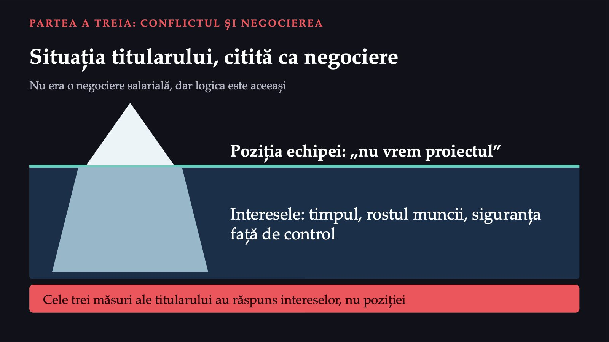
42 / 48În situația titularului nu era o negociere salarială, dar logica este aceeași. Poziția echipei era „nu vrem proiectul”; interesele erau timpul, rostul muncii și siguranța față de control. Cele trei măsuri ale titularului au răspuns intereselor, nu poziției.
Pasul 5: ce ați face ca prețul plătit de echipă să fie mai mic?
![PASUL 5: CE AȚI FACE VOI Pasul 5: ce ați face ca prețul plătit de echipă să fie mai mic? Răspundeți pe telefon, cu codul afișat pe ecran. Fiecare, singur, pe foaie, cu cel puțin două instrumente ale cursului ciclul și calendarul proiectului · conducerea situațională · cele cinci moduri de gestionare a conflictului · negocierea pe interese Prețul oboseala, conflictele, plecările Fiecare propunere spune ce se face, când în viața proiectului și cine o face Pe telefon, anonim o propunere sau o întrebare pentru titular](diapozitive/C13/043.jpg) 43 / 48
43 / 48Ultimul pas este al vostru. Fiecare scrie, singur, pe foaie, ce ar face ca prețul plătit de echipă, oboseala, conflictele și plecările, să fie mai mic. Folosiți cel puțin două instrumente ale cursului: ciclul și calendarul proiectului, conducerea situațională, cele cinci moduri de gestionare a conflictului, negocierea pe interese. Fiecare propunere spune ce se face, când în viața proiectului și cine o face. Pe telefon puteți trimite, anonim, o propunere sau o întrebare pentru titular; câteva dintre propunerile trimise astfel vor fi proiectate, fără nume.
Întrebările pe care le pun instrumentele cursului
![PASUL 5: CE AȚI FACE VOI Întrebările pe care le pun instrumentele cursului Situația nu spune că cineva din echipă a avut acest sindrom Organizația Mondială a Sănătății a inclus epuizarea profesională (burn-out) în Clasificarea internațională a maladiilor, revizia a 11-a (CIM-11), ca fenomen ocupațional, nu ca boală Oboseala întreabă calendarul munca de proiect a fost planificată în orele cui și pe drumul critic al cui? Conflictele întreabă etapa de confruntare tensiunile au fost discutate în echipă sau au rămas pe canalul informal? Plecările întreabă despărțirea ce a rămas pentru oameni după încheierea proiectului?](diapozitive/C13/044.jpg) 44 / 48
44 / 48Instrumentele cursului pun câteva întrebări, la care vă puteți sprijini propunerea. Oboseala întreabă calendarul: munca de proiect a fost planificată în orele cui și pe drumul critic al cui? Conflictele întreabă etapa de confruntare: tensiunile au fost discutate în echipă sau au rămas pe canalul informal? Plecările întreabă despărțirea: ce a rămas pentru oameni după încheierea proiectului? Oboseala prelungită are și o față medicală: Organizația Mondială a Sănătății a inclus epuizarea profesională în Clasificarea internațională a maladiilor, revizia a 11-a, ca fenomen ocupațional, nu ca boală. Situația nu spune că cineva din echipă a avut acest sindrom.
Propunerile voastre și ce s-a întâmplat
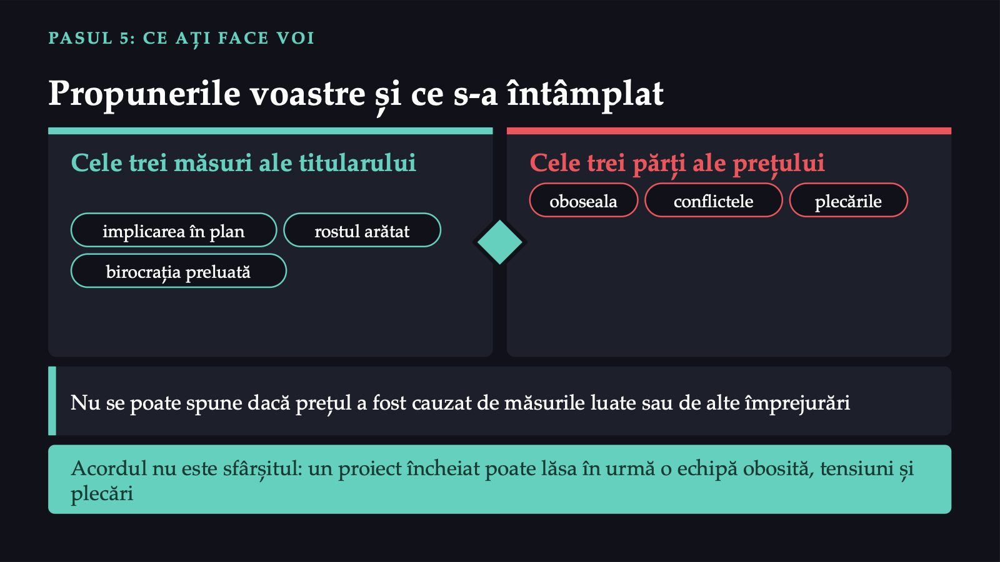
45 / 48Câteva dintre propunerile voastre se citesc acum, cu voce tare, de autorii lor, iar câteva dintre propunerile trimise pe telefon se proiectează. Puneți-le lângă ce s-a întâmplat: cele trei măsuri ale titularului, implicarea în plan, rostul arătat și birocrația preluată, și cele trei părți ale prețului. Nicio propunere nu este cea bună, iar situația nu spune nici dacă prețul a fost cauzat de măsurile luate sau de alte împrejurări. Cursul a pornit de la o situație trăită: un proiect cu fonduri externe, o echipă care nu-l voia și trei obiecții. Instrumentele de management al proiectelor, ciclul, cadrul logic, calendarul și bugetul, arată ce cere proiectul de la oameni. Instrumentele de conducere, comunicare și negociere arată cum se obține acordul lor. Situația a arătat și că acordul nu este sfârșitul: un proiect încheiat poate lăsa în urmă o echipă obosită, tensiuni și plecări.
Ce reținem
![RECAPITULAREA Ce reținem Un proiect este un efort temporar, cu un rezultat unic, un calendar și un buget; în spital, el se adaugă peste munca de rutină a acelorași oameni Cadrul logic leagă activitățile de rezultate, de scop și de obiectivul general; rostul proiectului se vede pe treptele de sus Managementul face lucrurile să funcționeze, conducerea face oamenii să accepte o schimbare; stilul depinde de competența și de angajamentul echipei pentru sarcina dată O conversație dificilă se pregătește: cadrul, ce știe deja interlocutorul, informația clară, emoțiile, planul făcut împreună Un conflict se gestionează prin competiție, colaborare, compromis, evitare sau acomodare; o negociere bună caută interesele din spatele pozițiilor și își cunoaște alternativa](diapozitive/C13/046.jpg) 46 / 48
46 / 48Cinci lucruri rămân din acest curs. Un proiect este un efort temporar, cu un rezultat unic, un calendar și un buget; în spital, el se adaugă peste munca de rutină a acelorași oameni. Cadrul logic leagă activitățile de rezultate, de scop și de obiectivul general; matricea lui are indicatori, surse de verificare și ipoteze, iar rostul proiectului se vede pe treptele de sus. Managementul face lucrurile să funcționeze, conducerea face oamenii să accepte o schimbare; stilul potrivit depinde de competența și de angajamentul echipei pentru sarcina dată. O conversație dificilă se pregătește: cadrul, ce știe deja interlocutorul, informația clară, emoțiile, planul făcut împreună. Un conflict se poate gestiona prin competiție, colaborare, compromis, evitare sau acomodare; o negociere bună caută interesele din spatele pozițiilor și își cunoaște alternativa.
Kahoot
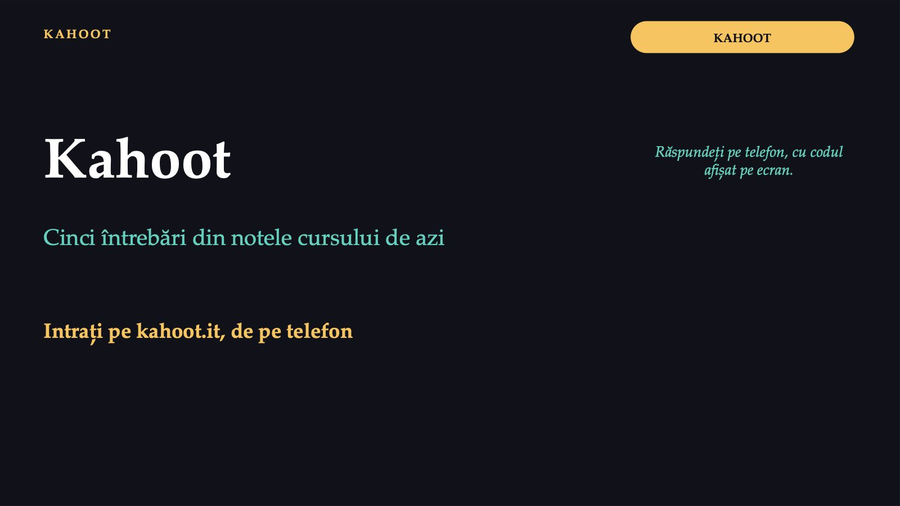
47 / 48Înainte de încheiere, un joc de cinci întrebări din notele cursului de azi, pe telefon.
Ce faceți diferit luni dimineață
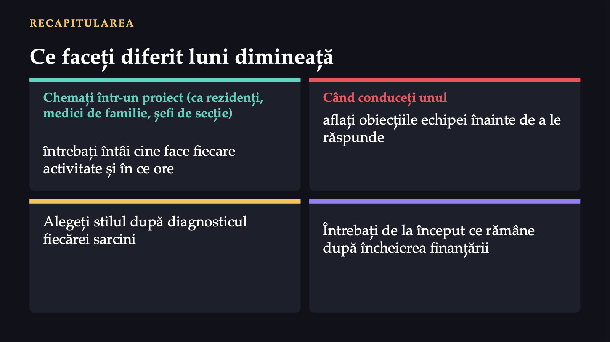
48 / 48Când veți fi chemați într-un proiect, ca rezidenți, ca medici de familie sau ca șefi de secție, întrebați întâi cine face fiecare activitate și în ce ore. Când veți conduce unul, aflați obiecțiile echipei înainte de a le răspunde, alegeți stilul după diagnosticul fiecărei sarcini și întrebați de la început ce rămâne după încheierea finanțării. Mulțumesc.
Săgeți sau spațiu: navigare · O: vedere de ansamblu · N: notele prezentatorului · F: ecran complet · Esc: închidere